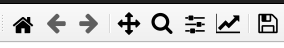

General Notes on using the pipeline¶
This section contains general nice-to-know information on useful features of the pipeline.
Controlling the plots displayed with Matplotlib.¶
The pipeline produces a large array of quality assesment plots. All of these are displayed using Matplotlib. All the plots have a menu bar that gives you acess to a wide range of options. You can zoom in and out, save the plot, set limits for the axes, limit image contrast, and many more. How the menu looks for different systems varies. For Linux Ubuntu, the menu looks like this (located in upper left corner):
{kind=link}
For your system the menu might look different, but the options are pretty much the same.
Spectral axis vs. Spatial axis¶
The software and the docs uses the terms spectral axis and spatial axis to refer to the two axes of the 2D spectrum. The spectral axis is the axis along which the wavelength values are displayed, and the spatial axis is the axis along which the spatial position of the object is displayed: